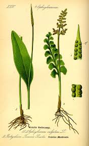

Ophioglossaceae
Adder's-tongue Family / Grape Fern Family
Ophioglossaceae is the only family in the order Ophioglossales, representing an ancient lineage of eusporangiate ferns (or near-eusporangiate). It includes about 4-12 genera (depending on classification) and ~80-110 species, such as adder's-tongues (Ophioglossum) and grape ferns/moonworts (Botrychium sensu lato). Found worldwide, these often fleshy ferns are unique in typically producing a single annual frond divided into a sterile photosynthetic blade (trophophore) and a distinct spore-bearing stalk (sporophore). Their sporangia are large, thick-walled, lack an annulus, and are not grouped into sori.
Overview
Ophioglossaceae represents a distinct evolutionary path among ferns, diverging very early from the lineage leading to the vast majority of modern ferns (leptosporangiates). They possess features considered ancestral, particularly their eusporangiate sporangium development (from multiple cells, resulting in large, thick-walled structures) and their unique life cycle involving subterranean, non-photosynthetic gametophytes dependent on mycorrhizal fungi.
These ferns are found globally in diverse habitats, from tropical forests to arctic tundra, often growing in meadows, fields, disturbed sites, or forest floors. Many species are small and easily overlooked. They typically produce only one frond per year from a short, fleshy underground rhizome. This frond's division into a sterile blade (trophophore) and a separate fertile spike or panicle (sporophore) is highly characteristic of the family.
The family includes species with the highest chromosome numbers known in any living organism (Ophioglossum reticulatum). While generally of little direct economic importance, some species have been used in traditional medicine. Their unique biology, ancient lineage, and dependence on mycorrhizae make them significant subjects for evolutionary and ecological research.
Quick Facts
- Scientific Name: Ophioglossaceae
- Common Name: Adder's-tongue family, Grape Fern family
- Number of Genera: Approximately 4-12 (e.g., Ophioglossum, Botrychium s.l., Helminthostachys, Mankyua)
- Number of Species: Approximately 80-110
- Distribution: Cosmopolitan (worldwide).
- Evolutionary Group: Monilophytes - Ophioglossidae - Ophioglossales (Eusporangiate Ferns)
Key Characteristics
Habit and Rhizome
Plants are perennial ferns, often somewhat fleshy. The rhizome is typically short, erect or subterranean, fleshy, and lacks scales (though sometimes bears hairs). Roots are usually fleshy, unbranched or sparsely branched, lack root hairs, and form obligate associations with mycorrhizal fungi.
Fronds (Leaves)
Typically, only one frond emerges per year (rarely more). The frond is characteristically divided into two distinct parts arising from a common stalk (petiole):
- Sterile Blade (Trophophore): The primary photosynthetic part. Its form is variable:
- Simple, undivided, often ovate or lanceolate with netted venation (e.g., Ophioglossum).
- Pinnately compound or highly dissected with free, dichotomous venation (e.g., Botrychium s.l., Helminthostachys).
- Fertile Segment (Sporophore): A specialized, non-leafy (or highly modified) stalk bearing the sporangia. It arises from the common stalk or at the base of the sterile blade. Its structure varies:
- A simple, unbranched spike with embedded sporangia (Ophioglossum).
- A branched, panicle-like structure with exposed, clustered sporangia resembling grapes (Botrychium s.l.).
- A spike with short lateral branches bearing sporangia clusters (Helminthostachys).
Stipular sheaths are present at the base of the common stalk, enclosing the bud for the next year's frond.
Reproductive Structures (Sporangia, Spores)
Reproduction involves large, uniquely structured sporangia borne on the specialized sporophore.
- Sporangia Arrangement: Sporangia are NOT clustered into sori and lack indusia. They are borne directly on the sporophore axis or its branches, either embedded in tissue (Ophioglossum) or exposed in clusters (Botrychium s.l., Helminthostachys).
- Sporangia Development & Structure: Development is eusporangiate (originating from multiple cells). Mature sporangia are relatively large, spherical, with thick walls (multiple cell layers), and completely lack an annulus (the specialized ring/patch of cells for dehiscence found in leptosporangiate ferns). Dehiscence occurs via simple transverse slits.
- Spores: Produced in very large numbers (often 1,000 to 15,000+ per sporangium). Spores are trilete (three-armed scar), globose-tetrahedral, typically thick-walled, non-green, and relatively long-lived compared to the green spores of Osmundaceae.
Gametophyte
The haploid gametophyte generation is fundamentally different from that of most ferns. It is typically subterranean, non-photosynthetic, fleshy, and often tuberous or cylindrical in shape. Gametophytes are mycoheterotrophic, obtaining all nutrients through obligatory associations with mycorrhizal fungi. They are long-lived (potentially decades) and difficult to find and study. They bear both antheridia and archegonia.
Field Identification
Identifying Ophioglossaceae usually relies on recognizing the unique frond structure, as the subterranean gametophytes are rarely seen:
Primary Identification Features
- Single Frond per Year (Usually): Look for individual fronds emerging from the ground.
- Frond Divided into Two Parts: The presence of both a sterile leaf-like blade (trophophore) and a distinct fertile stalk (sporophore) arising from a common petiole is key.
- Sporangia on Sporophore (Not in Sori): Spore structures are large, bead-like or grape-like, borne directly on the sporophore, not in discrete sori under the trophophore.
- No Indusium, No Annulus: Sporangia are naked and lack the typical dispersal mechanisms of leptosporangiate ferns.
- Trophophore Shape: Simple and undivided with netted veins (Ophioglossum) OR compound/dissected with free veins (Botrychium s.l., Helminthostachys).
- Fleshy Texture: Plants often have a somewhat fleshy or succulent feel compared to other ferns.
Secondary Identification Features
- Habitat: Meadows, fields, forests, disturbed areas - varies by species.
- Small Size: Many species are small and easily overlooked.
- Mycorrhizal Association: Roots are distinctive if visible (fleshy, no root hairs - requires excavation).
Seasonal Identification Tips
- Frond Emergence: Fronds typically appear in spring or early summer and may senesce later in the season. The sporophore often matures and releases spores before the trophophore withers.
- Persistence: Some species' trophophores may persist through winter (e.g., some Sceptridium).
Common Confusion Points
- Flowering Plants with Simple Leaves: Simple-leaved Ophioglossum might superficially resemble some flowering plants like Plantains (Plantago), but lack flowers and have the characteristic separate sporophore.
- Osmundaceae (Royal Fern Family): Also have separate fertile portions, but these are modified pinnae on a larger frond (or separate fronds), sporangia are smaller (though still large for ferns), have a rudimentary annulus, and plants have different rhizome/stipe base structure (stipular flanges).
- Lycopodiaceae (Clubmosses): Some clubmosses have spore-bearing structures in terminal cones (strobili), but these are modified leaves (sporophylls) bearing sporangia in their axils, and the vegetative stems/leaves are very different (small, scale-like or needle-like leaves covering the stem).
- Orchidaceae (Orchids): Some terrestrial orchids have simple basal leaves, but produce distinct flowers, not sporophores.
Field Guide Quick Reference
Look For:
- Fern habit, often fleshy
- Single frond (usually) per year
- Frond with 2 parts: sterile blade (trophophore) + fertile stalk (sporophore)
- Sporangia large, on sporophore
- NO sori, NO indusium, NO annulus
- Trophophore simple (net veins) OR compound (free veins)
- Gametophyte subterranean (not visible)
Key Distinctions:
- vs. Most Ferns: Ophioglossaceae has unique trophophore/sporophore, eusporangia, no sori/indusia/annulus.
- vs. Osmundaceae: Ophioglossaceae lacks annulus vestige, has different sporophore structure, lacks stipular flanges.
- vs. Flowering Plants: Ophioglossaceae lacks flowers, has sporophore.
Notable Examples
Ophioglossaceae includes several distinct genera and well-known species:

Ophioglossum vulgatum
Common Adder's-tongue
A widespread species found in meadows and grassy areas. Characterized by a simple, undivided, ovate trophophore with netted venation, and a simple, stalked sporophore spike resembling a snake's tongue.

Botrychium lunaria
Moonwort
Found in temperate and arctic regions, often in open grassy or rocky areas. Has a pinnately compound trophophore with distinctive fan-shaped or crescent-shaped leaflets (pinnae). The sporophore is a branched panicle bearing grape-like clusters of sporangia.

Sceptridium dissectum
Cut-leaf Grape Fern, Dissected Grape Fern
Common in eastern North America, often in forests or fields. Has a highly dissected, often triangular trophophore that typically persists through winter (bronze color). The sporophore is a branched panicle appearing in late summer/fall. (Often segregated from Botrychium).

Helminthostachys zeylanica
Kamraj, Tunjuk Langit
Found in tropical Asia and Australia. Has a large, palmately or pedately divided trophophore arising from a creeping rhizome. The sporophore is a dense spike with short lateral branches bearing clusters of sporangia. Used in traditional medicine.
Phylogeny and Classification
Ophioglossaceae is the only family in the order Ophioglossales. This order, along with the Psilotales (whisk ferns), forms the subclass Ophioglossidae. This subclass represents one of the earliest diverging lineages of extant ferns (Polypodiopsida), sister to all other ferns (including Marattiidae, Osmundidae, and the vast majority in Polypodiidae - leptosporangiates).
Their status as eusporangiate (or near-eusporangiate) ferns, along with their unique frond morphology and subterranean, mycoheterotrophic gametophytes, highlights their ancient origins and distinct evolutionary path. Relationships within the family are complex, with molecular studies leading to the splitting of traditional genera like Botrychium and Ophioglossum into multiple smaller genera (e.g., Sceptridium, Botrypus, etc.) to better reflect evolutionary lineages.
Position in Plant Phylogeny
- Kingdom: Plantae
- Clade: Tracheophytes (Vascular Plants)
- Clade: Monilophytes (Ferns and Horsetails)
- Class: Polypodiopsida (Ferns)
- Subclass: Ophioglossidae
- Order: Ophioglossales
- Family: Ophioglossaceae
Evolutionary Significance
Ophioglossaceae is highly significant in understanding plant evolution:
- Ancient Lineage: Represents a very early branch among ferns, retaining ancestral eusporangiate characteristics.
- Unique Life Cycle: The combination of a typical photosynthetic sporophyte with a subterranean, non-photosynthetic, mycoheterotrophic gametophyte is unique among ferns and vascular plants.
- Mycorrhizal Dependence: Highlights the importance and ancient origins of plant-fungal interactions.
- Frond Morphology: The distinct trophophore-sporophore structure is a unique evolutionary solution for separating photosynthesis and reproduction.
- Genetics: The genus Ophioglossum holds the record for the highest chromosome numbers known in any organism, raising questions about genome evolution and polyploidy.